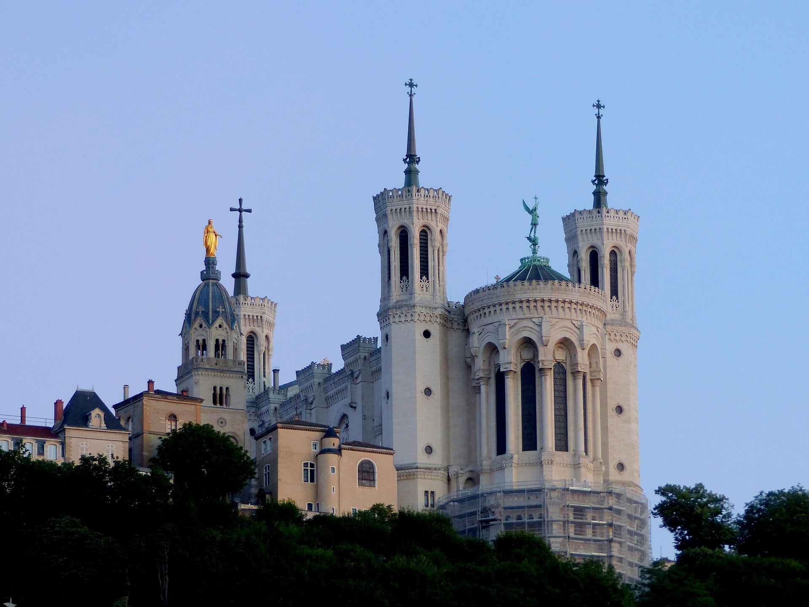
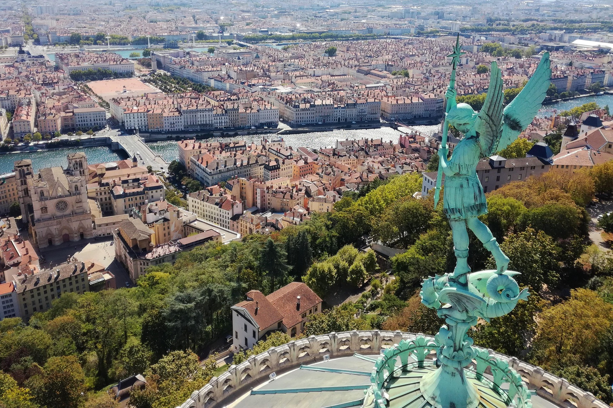

Vor der Stadt
Confluence als Ausgangspunkt für die spätere Stadtbildung.
Stadt Lyon | Offizielle Broschüre
Ausgabe 2026
Eine kompakte Übersicht über Geschichte, Kultur und das urbane Profil der Métropole. Klar strukturiert, grafisch prägnant und direkt einsetzbar für Kommunikation und Präsentation.
Kapitel 1

Vor der Stadt
Confluence als Ausgangspunkt für die spätere Stadtbildung.
43 v. Chr.
Lugdunum wird zur Hauptstadt Galliens und zum regionalen Zentrum.
15.-16. Jahrhundert
Renaissance, Handel und Buchdruck verankern Lyon europaweit.
18.-19. Jahrhundert
Die Canuts prägen Arbeitskultur, Quartiere und soziale Dynamik.
Heute
Die Métropole verbindet Erbe, Forschung und zeitgenössische Stadtentwicklung.
Kapitel 2
Fête des Lumières, Nuits de Fourvière und Filmfestivals machen Lyon zu einem starken kulturellen Taktgeber der Region.
Musée des Confluences, Opéra de Lyon und Maison de la Danse bündeln internationale Programme mit lokaler Verankerung.
Dezember
Fête des Lumières
Lichtinszenierungen in allen Quartieren.
Sommer
Nuits de Fourvière
Theater, Musik und Tanz im historischen Kontext.
Herbst
Festival Lumière
Internationales Filmprogramm der Stadt.
Kapitel 3
Place de la Comédie
69001 Lyon, France
Die Stadtverwaltung unterstützt Bürgerinnen und Bürger, Kulturinstitutionen, Vereine und Gäste mit zentralen Services und Informationen.
